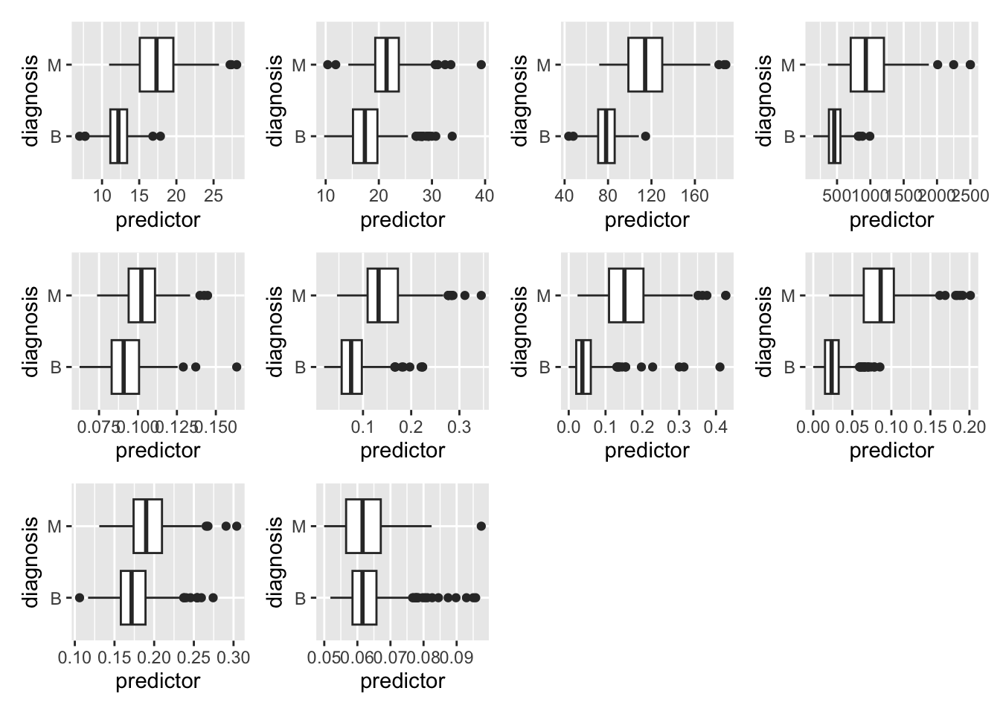
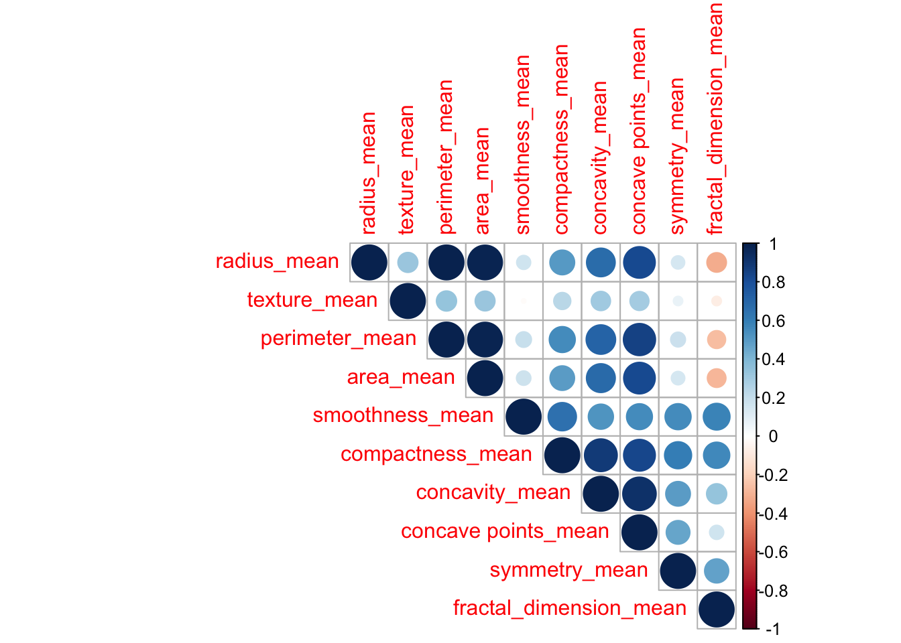
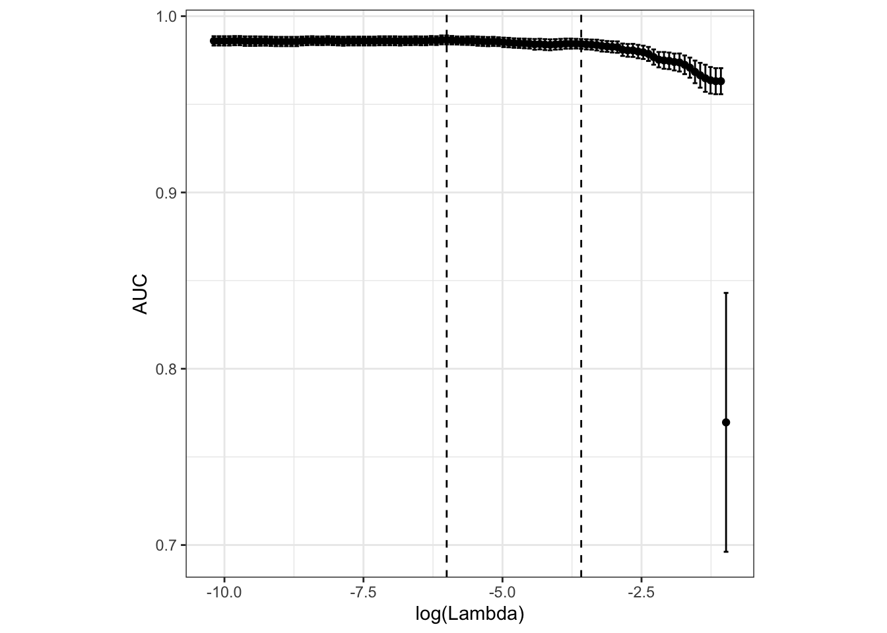
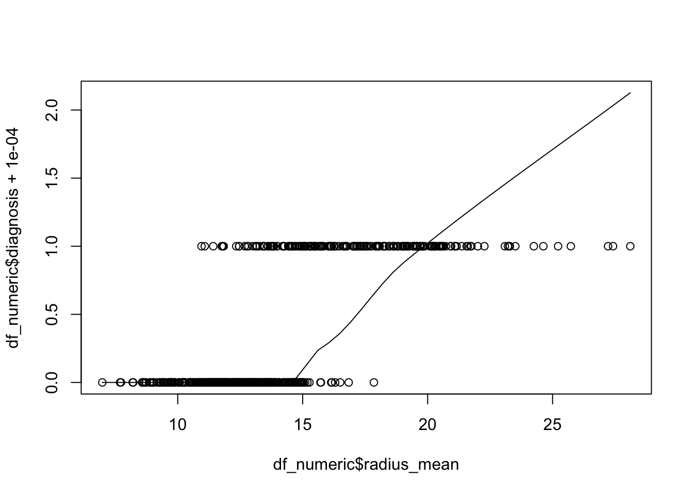
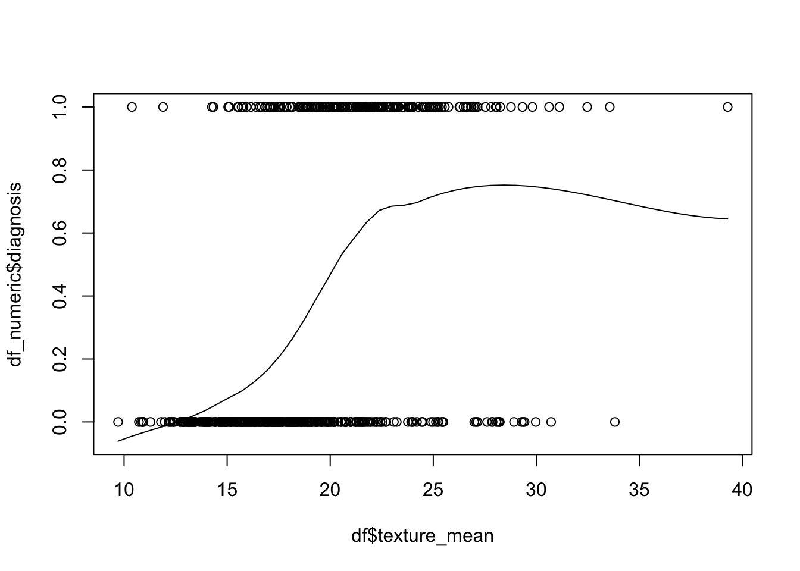
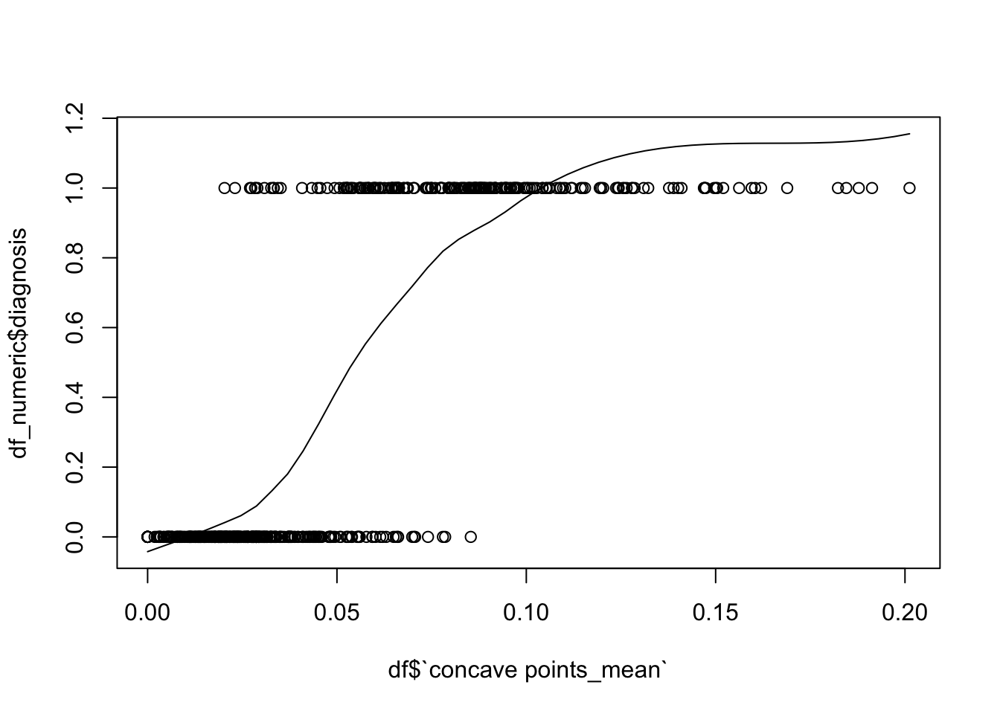
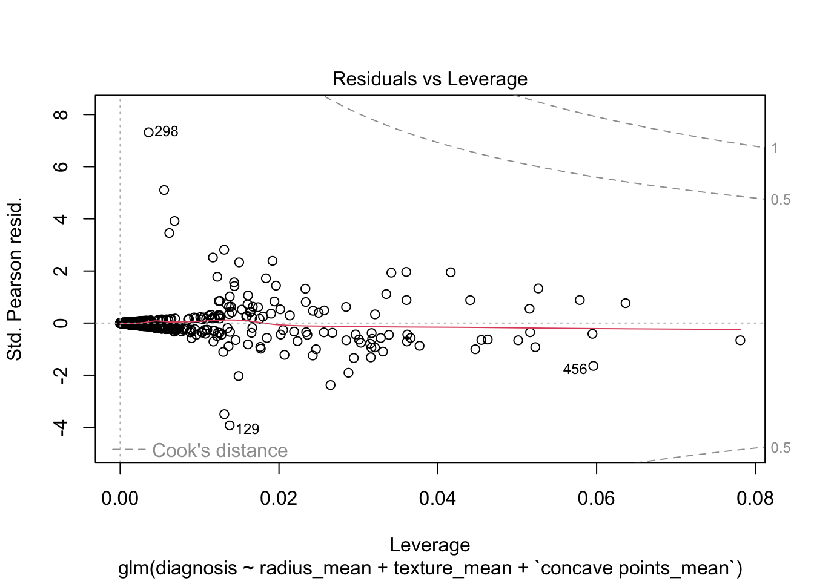
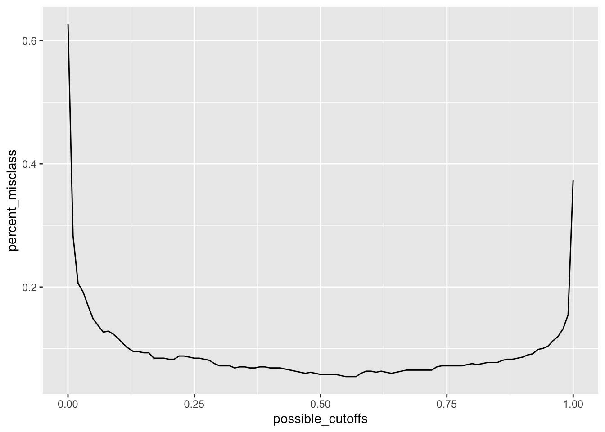

df <- vroom("Cancer_Data.csv")
set.seed(38)Final Project Template
Abstract
This study employs logistic regression to model the relationship between the diagnosis of a tumor as either malignant, or benign, and some selected features including the mean radius and texture of the tumor. After performing a LASSO variable selection, the logistic regression model yields coefficients for radius_mean (Estimate = 0.65634, p-value < 0.001), texture_mean (Estimate = 0.32593, p-value < 0.001), and concave points_mean (Estimate = 1.01166, p-value < 0.001). Tuning the cutoff threshold lead to an estimated (90%) sentitivity and (97%) specificity in our best model.
1 Problem and Motivation
1.1 Data Description
Millions of people each year are diagnosed with cancer; most people know someone who has it. One very important part of cancer is whether or not it is dangerous. In other words, if the cancer is benign (harmless) or malignant (harmful). The data from this study was found on Kaggle and the authors’ goal was to gather data on a number of predictors that can help in predicting whether or not a cancer is benign or malignant. To start out with, we removed some variables that we did not want to test. The variables that we kept were the ones that measured the mean. We got rid of everything that measured the “worst” of a predictor and the standard error of the predictor. We did this not only to help with interpretability (it is a lot easier to understand how the mean area of a tumor is associated with the response rather than the standard error of its area), but also because we were only curious about how those certain variables were related to a tumor being benign or malignant. There also was not clear documentation on what “worst” meant in the context of this data set, so that is another reason we removed those variables. After doing some further variable selection using the LASSO Shrinkage Method, the variables that we will be using in this project are radius_mean, texture_mean, and concave points_mean. Radius_mean is the average radius in millimeters taken from the center to the edges of the tumor along multiple different lines. Texture_mean is an average normalized measurement of how textured a tumor is. Finally, concave points_mean is an average normalized measure of the concavity of the concave points in a given portion of the tumor. The texture_mean and concave points_mean covariates do not have units given in the description of the data set. After some research into these sorts of tests with tumors, we discovered that the units for these variables are usually decided “in-house,” meaning that it is often a ratio of the tumor’s texture against itself. That is to say the unit is almost arbitrary and will differ from test to test and facility to facility. Thus, for the purpose of this project, we will furthermore just refer to the units for texture_mean and concave points_mean as “texture score” and “concave score.”
1.2 Questions of Interest
Does the mean radius of a tumor have a significant relationship with its status as benign or malignant? Is there a relationship between the texture of a tumor and its status as benign or malignant?
1.3 Regression Methods
To answer the first question about prediction, we will mostly be relying on logistic regression and the techniques we learned during Module 7. We will also be using some predictive analytic techniques to see how well we are able to predict the malignancy of tumors. To answer the second question, we will also be using logistic regression, specifically the output of our Generalized Logistic Regression model. We will be looking at the p-value of radius_mean to determine the answer to this question.
2 Analyses, Results, and Interpretation
df <- df %>%
mutate(diagnosis = as.factor(diagnosis)) %>%
select(diagnosis, radius_mean, texture_mean, perimeter_mean, area_mean, smoothness_mean, compactness_mean, concavity_mean, `concave points_mean`, symmetry_mean, fractal_dimension_mean)Exploratory Data Analysis
create_boxplot <- function(predictor) {
plot <- ggplot(data = df) +
geom_boxplot(mapping = aes(y = predictor, x = diagnosis)) +
coord_flip()
plot
}
plot1 <- create_boxplot(df$radius_mean)
plot2 <- create_boxplot(df$texture_mean)
plot3 <- create_boxplot(df$perimeter_mean)
plot4 <- create_boxplot(df$area_mean)
plot5 <- create_boxplot(df$smoothness_mean)
plot6 <- create_boxplot(df$compactness_mean)
plot7 <- create_boxplot(df$concavity_mean)
plot8 <- create_boxplot(df$`concave points_mean`)
plot9 <- create_boxplot(df$symmetry_mean)
plot10 <- create_boxplot(df$fractal_dimension_mean)
plot1 + plot2 + plot3 + plot4 + plot5 + plot6 + plot7 + plot8 + plot9 + plot10
No multicollinearity (using VIFs)
df.lm = glm(diagnosis ~ ., data = df, family = binomial(link = 'logit'))Warning: glm.fit: fitted probabilities numerically 0 or 1 occurredcorrplot(cor(select(df, -diagnosis)), type = 'upper')
vif(df.lm) radius_mean texture_mean perimeter_mean
899.370948 1.806626 698.864791
area_mean smoothness_mean compactness_mean
129.663816 4.375401 15.284985
concavity_mean `concave points_mean` symmetry_mean
5.262546 5.858563 1.839473
fractal_dimension_mean
9.789119 LASSO Shrinkage Method
df_x <- as.matrix(select(df, -diagnosis))
df_y <- unlist(select(df, diagnosis) %>%
mutate(diagnosis = ifelse(diagnosis == 'M', 1, 0)))
df_LASSO_cv <- cv.glmnet(x = df_x,
y = df_y,
type.measure = "auc",
alpha = 1,
family = 'binomial')
autoplot(df_LASSO_cv, label = FALSE) +
theme_bw() +
theme(aspect.ratio = 1)
coef(df_LASSO_cv, s = "lambda.1se")11 x 1 sparse Matrix of class "dgCMatrix"
s1
(Intercept) -10.2296854
radius_mean 0.3040700
texture_mean 0.1363117
perimeter_mean .
area_mean .
smoothness_mean .
compactness_mean .
concavity_mean .
concave points_mean 55.2038122
symmetry_mean .
fractal_dimension_mean . Fit a new model
df_logistic <- glm(diagnosis ~ radius_mean + texture_mean + `concave points_mean`,
data = df,
family = binomial(link = "logit"))
summary(df_logistic)
Call:
glm(formula = diagnosis ~ radius_mean + texture_mean + `concave points_mean`,
family = binomial(link = "logit"), data = df)
Coefficients:
Estimate Std. Error z value Pr(>|z|)
(Intercept) -21.16413 2.51041 -8.431 < 2e-16 ***
radius_mean 0.65634 0.12533 5.237 1.63e-07 ***
texture_mean 0.32593 0.05529 5.895 3.75e-09 ***
`concave points_mean` 101.16618 13.02078 7.770 7.87e-15 ***
---
Signif. codes: 0 '***' 0.001 '**' 0.01 '*' 0.05 '.' 0.1 ' ' 1
(Dispersion parameter for binomial family taken to be 1)
Null deviance: 750.51 on 567 degrees of freedom
Residual deviance: 164.38 on 564 degrees of freedom
AIC: 172.38
Number of Fisher Scoring iterations: 8\(\log(\frac{\pi_i}{1-\pi_i})=-21.164 + 0.656\times \text{radius mean}_i + 0.326\times \text{texture mean}_i + 101.166\times \text{texture_mean}_i\)
Where \(\pi_i = P(diagnosis_i = 1 | \text{radius mean}_i, \text{texture mean}_i, \text{texture_mean}_i)\) and \(diagnosis_i \stackrel{iid}{\sim} Bernoulli(\pi_i)\)
No multicollinearity (using VIFs)
# real R^2
df_lm <- glm(diagnosis ~ radius_mean + texture_mean + `concave points_mean`,
data = mutate(df, diagnosis = ifelse(diagnosis == 'M', 1, 0)))
vif(df_lm) radius_mean texture_mean `concave points_mean`
3.160992 1.124151 3.091396 max(vif(df_lm)) # less than 10[1] 3.160992mean(vif(df_lm)) # less than 5[1] 2.458846Our Variance Inflation Factors (VIFs) have a mean less than 5 and a maximum less than 10. We may assume there is no extreme multicollinearity in our model.
The x’s vs log odds are linear (monotone in probability)
df_numeric <- mutate(df, diagnosis = ifelse(diagnosis == 'B', 0, 1))
scatter.smooth(x = df_numeric$radius_mean, y = df_numeric$diagnosis + .0001)
scatter.smooth(x = df$texture_mean, y = df_numeric$diagnosis)
scatter.smooth(x = df$`concave points_mean`, y = df_numeric$diagnosis)
None of our plots show extreme non-linearity. We may assume the x’s vs log odds are linear.
The observations are independent
Each of the observations in our dataset has a unique ID number and is assumed to have been randomly collected. We will assume that our observations are independent.
The response variable is Bernoulli
Our response variable is modeled by a Bernoulli distribution, with the only possible outcomes being Malignant (True) and Benign (False).
No counfounding variables
We will assume that we have accounted for all variables of significance in our model.
Influential observations:
plot(df_logistic, which = 5) # residuals vs leverage
None of our observations appear unduly influential based on our Cook’s plot.
All of our assumptions are met. We may proceed to statistical inference.
Findings and Interpretations
Now that we have met all the assumptions for the data, we can interpret the relationships between tumor malignancy and key tumor measurements.
summary(df_logistic)
Call:
glm(formula = diagnosis ~ radius_mean + texture_mean + `concave points_mean`,
family = binomial(link = "logit"), data = df)
Coefficients:
Estimate Std. Error z value Pr(>|z|)
(Intercept) -21.16413 2.51041 -8.431 < 2e-16 ***
radius_mean 0.65634 0.12533 5.237 1.63e-07 ***
texture_mean 0.32593 0.05529 5.895 3.75e-09 ***
`concave points_mean` 101.16618 13.02078 7.770 7.87e-15 ***
---
Signif. codes: 0 '***' 0.001 '**' 0.01 '*' 0.05 '.' 0.1 ' ' 1
(Dispersion parameter for binomial family taken to be 1)
Null deviance: 750.51 on 567 degrees of freedom
Residual deviance: 164.38 on 564 degrees of freedom
AIC: 172.38
Number of Fisher Scoring iterations: 8100 * (exp(.65634) - 1)[1] 92.77239Holding all else constant, for every unit increase in the mean radius (mm) of a tumor, the probability of the tumor being malignant increases by 92.77%
100 * (exp(.32593) - 1)[1] 38.53184Holding all else constant, for every unit increase in the mean texture score of a tumor, the probability of the tumor being malignant increases by 38.53%
# Because the range for mean texture score is so low, we will divide the coefficient by 1000 and interpret it based on unit increases of .001
100 * (exp(.10116618) - 1)[1] 10.64605Holding all else constant, for every .001 unit increase in the mean concave points score of a tumor, the probability of the tumor being malignant increases by 10.65%
3 Conclusions
Looking at the summary from our generalized linear model output, we can see that the p-values for all three of our predictors are much less than \(\alpha\) = 0.05. Since this is the case, we reject the null hypothesis. There is sufficient evidence to conclude that radius_mean, texture_mean, and concave points_mean all have a significant relationship with the malignancy of a tumor.
# get the predicted probabilities for all 757 patients:
df_preds <- predict(df_logistic,
type = 'response')
# create a sequence from 0 to 1 to represent all possible cut-off values (c)
# that we could choose:
possible_cutoffs <- seq(0, 1, by = 0.01)
# transform heart$chd from a factor with levels "yes" and "no" to a factor with
# levels 1 and 0:
df_binary <- ifelse(df$diagnosis == "M", 1, 0)
# create an empty vector where we will store the percent misclassified for each
# possible cut-off value we created:
percent_misclass <- rep(NA, length(possible_cutoffs))
# for each possible cut-off value, (1) grab the cut-off value, (2) for all 757
# patients, store a 1 in "classify" if their predicted probability is larger
# than the cut-off value, and (3) compute the average percent misclassified
# across the 757 patients when using that cut-off by averaging the number of
# times "classify" (0 or 1 based on how that cut-off classified a person) is
# not the same as heart_binary (the truth):
for(i in 1:length(possible_cutoffs)){
classify <- ifelse(df_preds > possible_cutoffs[i], 1, 0)
percent_misclass[i] <- mean(classify != df_binary)
percent_misclass
}
percent_misclass [1] 0.62676056 0.28345070 0.20598592 0.19190141 0.16901408 0.14788732
[7] 0.13732394 0.12676056 0.12852113 0.12323944 0.11619718 0.10739437
[13] 0.10035211 0.09507042 0.09507042 0.09330986 0.09330986 0.08450704
[19] 0.08450704 0.08450704 0.08274648 0.08274648 0.08802817 0.08802817
[25] 0.08626761 0.08450704 0.08450704 0.08274648 0.08098592 0.07570423
[31] 0.07218310 0.07218310 0.07218310 0.06866197 0.07042254 0.07042254
[37] 0.06866197 0.06866197 0.07042254 0.07042254 0.06866197 0.06866197
[43] 0.06866197 0.06690141 0.06514085 0.06338028 0.06161972 0.05985915
[49] 0.06161972 0.05985915 0.05809859 0.05809859 0.05809859 0.05809859
[55] 0.05633803 0.05457746 0.05457746 0.05457746 0.05985915 0.06338028
[61] 0.06338028 0.06161972 0.06338028 0.06161972 0.05985915 0.06161972
[67] 0.06338028 0.06514085 0.06514085 0.06514085 0.06514085 0.06514085
[73] 0.06514085 0.07042254 0.07218310 0.07218310 0.07218310 0.07218310
[79] 0.07218310 0.07394366 0.07570423 0.07394366 0.07570423 0.07746479
[85] 0.07746479 0.07746479 0.08098592 0.08274648 0.08274648 0.08450704
[91] 0.08626761 0.08978873 0.09154930 0.09859155 0.10035211 0.10387324
[97] 0.11267606 0.11971831 0.13204225 0.15492958 0.37323944# percent_misclass holds the average misclassification rates for each cut-off
misclass_df <- as.data.frame(cbind(percent_misclass, possible_cutoffs))
# put this information in a dataframe so we can plot it with ggplot:
ggplot(data = misclass_df) +
geom_line(aes(x = possible_cutoffs, y = percent_misclass))
# plot the misclassification rate against the cut-off value:
ggplot(data = misclass_df) +
geom_line(aes(x = possible_cutoffs, y = percent_misclass))# choose the "best" cut-off that minimizes the percent misclassified:
cutoff_best <- possible_cutoffs[which.min(percent_misclass)]
# create a confusion matrix with the truth and the predicted classification:
preds <- df_preds > cutoff_best
conf_mat <- table("Truth" = df$diagnosis,
"Predicted" = preds)
conf_mat Predicted
Truth FALSE TRUE
B 346 10
M 21 191# note that we can also add column and row sums, which is useful for
# calculations:
addmargins(conf_mat) Predicted
Truth FALSE TRUE Sum
B 346 10 356
M 21 191 212
Sum 367 201 568sensitivity <- 191/212
sensitivity[1] 0.9009434specificity <- 346/356
specificity[1] 0.9719101precision <- 191/201
precision[1] 0.9502488neg_pred_val <- 346/367
neg_pred_val[1] 0.9427793accuracy <- (346 + 191) / 568
accuracy[1] 0.9454225Based on our Confusion Matrix, we see that our model had 10 false positives and 21 false negatives. The sensitivity of our model was 0.90. The specificity was 0.97. The precision (aka Positive Predictive Value) was 0.95. The Negative Predictive Value was 0.94. Finally, the overall Accuracy of the test was 0.95.
deviance <- 750.51 - 164.38
deviance[1] 586.13The Deviance of our model is 586.13.
pseudo_r2 <- 1 - (164.38 / 750.51)
pseudo_r2[1] 0.7809756Our psuedo \(R^2\) value is 0.78. This means that about 78% of the total variability seen in the log odds can be explained by radius_mean, texture_mean, and concave points_mean.
4 Contributions
Ty Hawkes took the lead in finding and cleaning our dataset. He also consistently reviewed code chunks and was dedicated to debugging any issues. Ty wrote the interpretations and generally helped the group out when we were stuck.
Talmage Hilton wrote most of our conclusions and observed results. He was focused on the goals of the project and kept us on track. He also made the confusion matrix and ROC curve to attest to the accuracy of our model.
Chris Gordon checked the assumptions for our model and helped with debugging. He also wrote our fitted model and helped find solutions to problems at each step of the project.
APPENDIX
If there are any analyses, such as exploratory plots/summaries or work you did to determine appropriate transformations, or any relevant material that does not belong in one of the sections above, these can go in the Appendix. If you don’t have any material like this, you can remove this section.